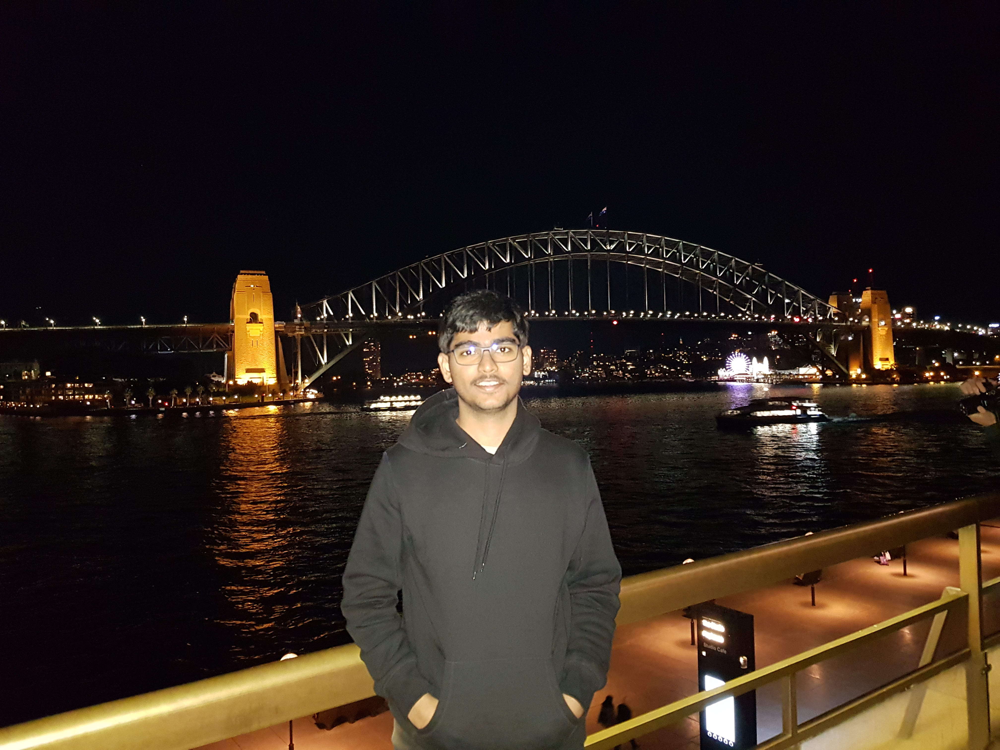

Hi, I am a Research Fellow at Microsoft Research India. At MSR, I am building technologies for code-mixed (or code-switched) languages with Dr. Monojit Choudhury. In 2017, I graduated with Bachelor of Technology in Computer Science from Indian Institute of Technology Bombay. At IIT Bombay, for my undergraduate thesis, I worked on automatic short answer grading with Prof. Pushpak Bhattacharyya and Dr. Shourya Roy. In Summer 2016, I interned with Dr. Shourya Roy at Xerox Research Center India. I am interested in building machine learning techniques to solve NLP problems.
My work on code-mixing was featured in Microsoft Research Blog, “Cracking code-mixing — an important step in making human-computer interaction more engaging”.